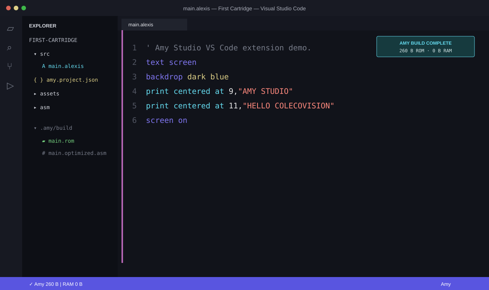
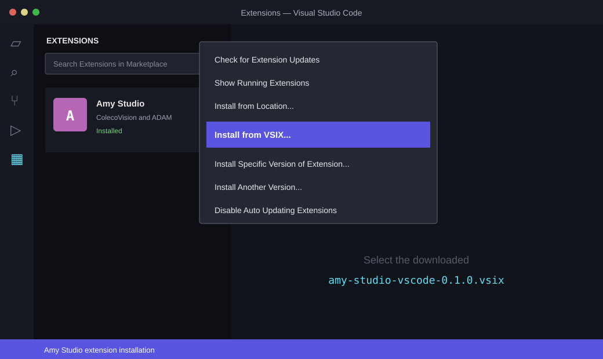

Your game remains readable `.alexis`, not code hidden inside JSON.
LOCAL AMY DEVELOPMENT
AMY STUDIO FOR VS CODE
Write ordinary .alexis files, keep graphics and assembly beside your source, compile with the same Amy toolchain, and inspect errors without leaving Visual Studio Code.

Use separate source, asset, ASM and data files through `@project/...`.
Compiler errors become clickable VS Code problems with source locations.
Every VSIX carries a tested Amy compiler snapshot instead of depending on the website.
INSTALL IN THREE STEPS
No command line setup required.

Where is “Install from VSIX”?
Open the Extensions view from the left activity bar. Its Views and More Actions… menu contains Install from VSIX…. Select the file downloaded from this page and reload VS Code when requested.
Download
Save amy-studio-vscode-0.1.1.vsix from this page.
Install from VSIX
In VS Code, open Extensions, choose the … menu, then Install from VSIX… and select the download.
Open or create
Open a folder containing an `.alexis` file, or run Amy: Create Project from the Command Palette.
PROJECTS WITHOUT FRICTION
Code stays in code files.
MY-GAME/ ├── amy.project.json ├── src/ │ └── main.alexis ├── assets/ └── asm/
The small amy.project.json file only records the entry source, target and build profile. It never replaces your Amy source. Standalone `.alexis` files also compile without a manifest.
{
"name": "My Amy Game",
"entry": "src/main.alexis",
"target": "colecovision-cartridge",
"optimization": "balanced"
}DAILY COMMANDS
Compile and inspect from the editor.
| Command | Purpose |
|---|---|
| Amy: Compile Project | Build with the project or configured optimization profile. |
| Amy: Compile Project (Optimization Off) | Produce a diagnostic unoptimized build. |
| Amy: Compile Project (Aggressive) | Request the aggressive optimization profile explicitly. |
| Amy: Open Generated Assembly | Inspect the post-optimizer Z80 source. |
| Amy: Reveal Compiled ROM | Open the `.amy/build` output folder at the ROM. |
STABLE BY DEFAULT
The compiler does not drift underneath a project.
Version 0.1.0 embeds the clean Amy Studio compiler used to build it. Advanced users can point amyStudio.compilerPath at another checkout when deliberately testing experimental language changes.